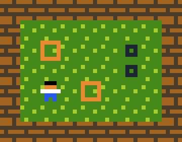
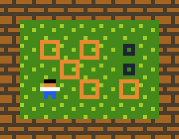
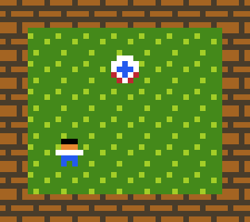
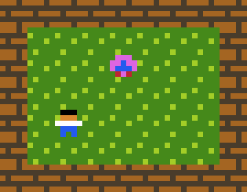
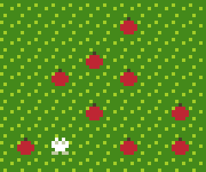
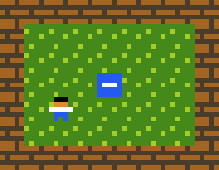
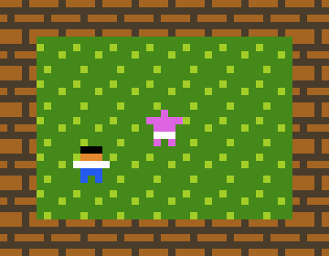

PuzzleScript is a game engine designed to help you make tile-based puzzle games. The most famous tile-based puzzle game is sokoban:

Sokoban has one rule:
PuzzleScript allows you to express this succinctly:
Edit[ > Player | Crate ] -> [ > Player | > Crate ]The engine looks for the pattern on the left, and replaces it with the one on the right.
> is a directional arrow. The four arrows are <, >, ^, and v.
Let's play with the above line of code - what would happen if we changed the direction of the arrows?
Edit[ < Player | Crate ] -> [ < Player | < Crate ]Now, the crates stick to you you when you move away from them!
The engine works like this:
What might you want to do after movements have been applied? Say you want three crates in a row to vanish (a la block faker), you do this by adding the following rule:
Editlate [ Crate | Crate | Crate ] -> [ | | ]
If the late keyword wasn't there, the crates wouldn't disappear until the start of the next turn.
Let's have spooky eyeballs that follow you around.
Edit[ Eyeball | ... | Player ] -> [ > Eyeball | ... | Player ]
Here's a naughty teleport sprite - whenever she sees you she swaps places with you:
late [ Sprite | ... | Player ] -> [ Player | ... | Sprite ]No wait! Don't type that in! It causes an infinite loop, it keeps swapping them back and forth forever. This fixes it:
Editlate [ Sprite | ... | Player ] -> [ Temp | ... | Sprite ]
late [ Temp ] -> [ Player ]
What if you're a kitty that likes fruit?
Edit[ > Kitty | ... | Fruit ] -> [ | ... | Kitty ]
[ > Kitty ] -> [ Kitty ]The second line is because we are moving the kitty ourselves, and don't want the game engine letting kitty wander about.

What if you want crates that can only be pushed horizontally?
EditHorizontal [ > Player | Block ] -> [ > Player | > Block ]This only looks for occurrences of the pattern that are horizontal. You could also say vertical instead.

You can have several patterns rather than just a single row - here's a sumo wrestler that imitates whatever you do, whever you are:
Edit[ > Player ] [ Sumo ] -> [ > Player ] [ > Sumo ]
That about covers all the basics. You should be able to tinker with the examples now. There's plenty more to read if you want to, but I would advise to learn the rest on a need-to-know basis. There're no prizes for knowing all the nooks and crannies of PuzzleScript - it's a tool for making games, and if you're not doing that with it, then the engine has failed in its purpose.
 PuzzleScript
PuzzleScript